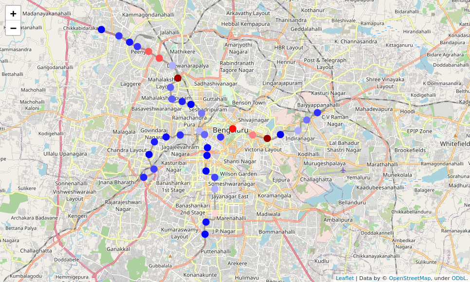
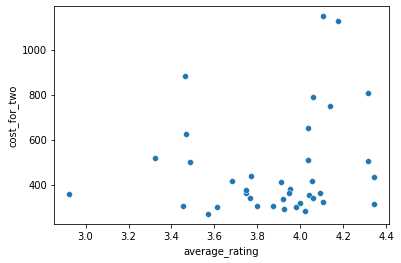
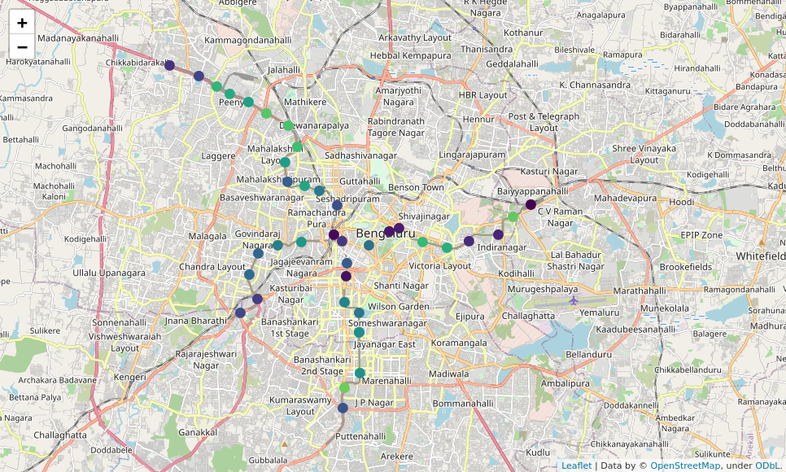
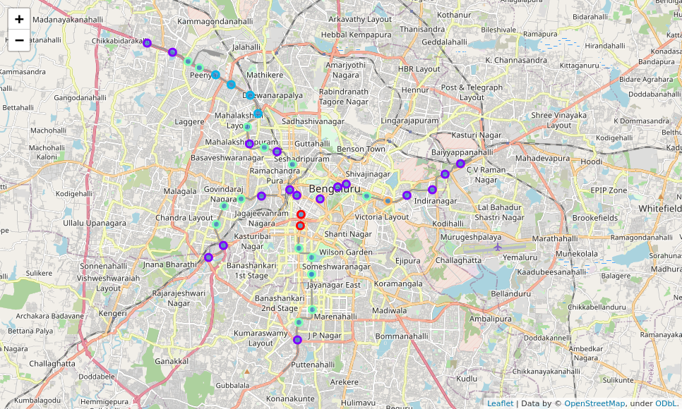

Table of Contents
1 Introduction
Bangalore is a very vibrant and multicultural city. There's probably a restaurant here representing every cuisine in the world. But getting around the city is a hassle. Traffic is another thing Bangalore is well known for.
To help promote tourism in the city, this project will utilize data from FourSquare and Zomato to formulate a tour of the city by using just the Metro Rail Services and a bit of walking. This project can be used by Tourism Boards to promote visiting Bangalore, which will have a very real impact on the city's income.
By aggregating various factors for each Metro station, we can rank them on the basis of:
- Proximity to tourist places like Temples, Parks, Museums, etc.
- Number of restaurants in the vicinity.
- Diversity & Ratings of restaurants in the area.
2 Data
2.1 Wikipedia
URL: https://en.wikipedia.org/wiki/List_of_Namma_Metro_stations
This page contains a list of all functional metro stations in Bengaluru in a tabular format. The table also contains a link to each metro station's own wiki page.
URL: https://www.wikiwand.com/en/Majestic_metro_station
This is an example URL to one of the metro stations. The station specific pages have an info card which lists the exact location of the station in Lat/Long format. For example, `Majestic Metro Station's` coordinates are `12.975692°N 77.572836°E`. Lat/long obtained this way for each location will be used to query both Zomato & FourSquare to find venues near the metro stations.
2.2 Zomato
Zomato is an Indian company that aggregates restaurant data. They have a data API that can be leveraged to obtain restaurants in an area given coordinates. This data will supplement FourSquare's data very well. A detailed description of the API can be found at: https://developers.zomato.com/documentation#!/restaurant/search
Sample output from Zomato API for a restaurant
{
"restaurant":{
"R":{
"res_id":19304399,
"is_grocery_store":false,
"has_menu_status":{
"delivery":-1,
"takeaway":-1
}
},
"apikey":"6ae125390c2cc1f1439b61445147ce52",
"id":"19304399",
"name":"Stoned Monkey",
"url":"https://www.zomato.com/bangalore/stoned-monkey-vijay-nagar-bangalore?utm_source=api_basic_user&utm_medium=api&utm_campaign=v2.1",
"location":{
"address":"22/1, Ground Floor, 3rd Main Road, Attiguppe, Chikkapete, Vijay Nagar, Bangalore",
"locality":"Vijay Nagar",
"city":"Bangalore",
"city_id":4,
"latitude":"12.9602338459",
"longitude":"77.5323341042",
"zipcode":"",
"country_id":1,
"locality_verbose":"Vijay Nagar, Bangalore"
},
"switch_to_order_menu":0,
"cuisines":"Desserts, Ice Cream, Beverages",
"timings":"12noon – 12midnight (Mon-Sun)",
"average_cost_for_two":400,
"price_range":1,
"currency":"Rs.",
"highlights":[
"Cash",
"Delivery",
"Credit Card",
"Takeaway Available",
"Debit Card",
"Indoor Seating",
"Desserts and Bakes",
"Air Conditioned",
"Wifi"
],
"offers":[
],
"opentable_support":0,
"is_zomato_book_res":0,
"mezzo_provider":"OTHER",
"is_book_form_web_view":0,
"book_form_web_view_url":"",
"book_again_url":"",
"thumb":"https://b.zmtcdn.com/data/pictures/2/17978352/5fc92af63722a09babd80a8d5253bf99.jpg?fit=around%7C200%3A200&crop=200%3A200%3B%2A%2C%2A",
"user_rating":{
"aggregate_rating":"3.6",
"rating_text":"Good",
"rating_color":"9ACD32",
"rating_obj":{
"title":{
"text":"3.6"
},
"bg_color":{
"type":"lime",
"tint":"600"
}
},
"votes":140
},
"all_reviews_count":1,
"photos_url":"https://www.zomato.com/bangalore/stoned-monkey-vijay-nagar-bangalore/photos?utm_source=api_basic_user&utm_medium=api&utm_campaign=v2.1#tabtop",
"photo_count":160,
"menu_url":"https://www.zomato.com/bangalore/stoned-monkey-vijay-nagar-bangalore/menu?utm_source=api_basic_user&utm_medium=api&utm_campaign=v2.1&openSwipeBox=menu&showMinimal=1#tabtop",
"featured_image":"https://b.zmtcdn.com/data/pictures/2/17978352/5fc92af63722a09babd80a8d5253bf99.jpg?output-format=webp",
"has_online_delivery":1,
"is_delivering_now":0,
"store_type":"",
"include_bogo_offers":true,
"deeplink":"zomato://restaurant/19304399",
"is_table_reservation_supported":0,
"has_table_booking":0,
"events_url":"https://www.zomato.com/bangalore/stoned-monkey-vijay-nagar-bangalore/events#tabtop?utm_source=api_basic_user&utm_medium=api&utm_campaign=v2.1",
"phone_numbers":"+91 9731780914",
"all_reviews":{
"reviews":[
{
"review":[]
}
]
},
"establishment":[
"Dessert Parlour"
],
"establishment_types":[]
}
}
From Zomato, we can obtain a restaurant's
- Exact address and lat/long for precise mapping
- Cuisine type,
- Ratings,
- Popularity, etc.
We will be using the cuisine type (one-hot encoding) and ratings as features. This data will be aggregated for all restaurants around a Metro Station.
2.3 Foursquare
We can also use FourSquare to find out if there are any interesting places to visit that are walkable from a Metro station. Using foursquare, we obtain interesting places to visit such as
- Museum,
- Expos,
- Theatres,
- Shopping centres,
- Parks, etc.
Sample output from FourSquare API for a venue
{
"reasons":{
"count":0,
"items":[
{
"summary":"This spot is popular",
"type":"general",
"reasonName":"globalInteractionReason"
}
]
},
"venue":{
"id":"52be91c8498e64525d5b46f0",
"name":"KFC",
"location":{
"address":"No 96, next to HP petrol pump",
"crossStreet":"Chandra layout",
"lat":12.960916180639444,
"lng":77.5281295778429,
"labeledLatLngs":[
{
"label":"display",
"lat":12.960916180639444,
"lng":77.5281295778429
}
],
"distance":602,
"postalCode":"560040",
"cc":"IN",
"city":"Bangalore",
"state":"Karnātaka",
"country":"India",
"formattedAddress":[
"No 96, next to HP petrol pump (Chandra layout)",
"Bangalore 560040",
"Karnātaka",
"India"
]
},
"categories":[
{
"id":"4d4ae6fc7a7b7dea34424761",
"name":"Fried Chicken Joint",
"pluralName":"Fried Chicken Joints",
"shortName":"Fried Chicken",
"icon":{
"prefix":"https://ss3.4sqi.net/img/categories_v2/food/friedchicken_",
"suffix":".png"
},
"primary":true
}
],
"photos":{
"count":0,
"groups":[]
}
},
"referralId":"e-0-52be91c8498e64525d5b46f0-1"
}
</code>
As we can see above, we can get the following details about a venue from FourSquare:
- Exact latitude/longitude for marking on maps.
- Category of the location.
3 Methodology
3.1 Exploratory Analysis
For each metro station, we find the average ratings and cost for two.
As expected, the cost and ratings of terminal stations are pretty low.
Some interesting observations from the data:
- Most popular cuisines:
- North Indian
- Chinese
- South Indian
- Fast food
- Beverages
- Most diverse locations in terms of cuisines available:
As most residents of the city know, these are all pretty upscale locations.
- Trinity (27)
- Cubbon park (26)
- Sandal Soap Factory (26)
- Sampige road (26)
- MG Road (26)
- Costliest locations:
Both these locations cost most than 1000 INR for a meal for two.
- Trinity
- Sandal Soap Factory
- Cheapest locations:
- Halasuru
- National College

Figure 1: (Screenshot) Map of Bengaluru Metro stations color coded for their average cost for a meal for two. (Greener the better. )

Figure 2: This graph shows a plot of costs against ratings.

Figure 3: (Screenshot) Map of Bengaluru Metro stations color coded for their average ratings. (Greener the better. )
4 Results
We run kmeans clustering on the aggregated data. Number of clusters was fixed at 5 as splitting 39 rows into too many clusters might lead to overfitting.

Figure 4: (Screenshot) Map of Bengaluru Metro stations clustered.
| name | Cluster labels |
|---|---|
| Attiguppe | 3 |
| Baiyappanahalli | 1 |
| Banashankari | 3 |
| Bangalore City Railway Station | 1 |
| Chickpete | 0 |
| Cubbon Park | 1 |
| Dasarahalli | 1 |
| Deepanjali Nagar | 1 |
| Halasuru | 1 |
| Hosahalli | 3 |
| Indiranagar | 1 |
| Jalahalli | 3 |
| Jayanagar | 3 |
| Jayaprakash Nagar | 1 |
| Krishna Rajendra Market | 0 |
| Lalbagh | 3 |
| Magadi Road | 1 |
| Mahalakshmi | 3 |
| Majestic | 1 |
| Mahatma Gandhi Road | 3 |
| Mysore Road | 1 |
| Nagasandra | 1 |
| National College | 3 |
| Peenya | 2 |
| Peenya Industry | 3 |
| Rajajinagar | 1 |
| Rashtrakavi Kuvempu Road | 3 |
| Rashtreeya Vidyalaya Road | 3 |
| Sampige Road | 3 |
| Sandal Soap Factory | 2 |
| Sir M. Visveshwarya | 1 |
| Swami Vivekananda Road | 1 |
| South End Circle | 3 |
| Srirampura | 1 |
| Trinity | 4 |
| Dr. B. R. Ambedkar Station, Vidhana Soudha | 1 |
| Vijayanagar | 3 |
| Yeshwantpur | 2 |
| Goraguntepalya | 2 |
5 Discussion
Some salient points from this analysis.
- There seems to be no direct correlation between cost and ratings.
- FourSquare data was extremely lacking for Indian cities. A lot of entries were at least years old and not updated.
In a future iteration of this project, we can probably integrate Google ratings too to get an even higher fidelity for our data set.
6 Conclusion
From this analysis of restaurant data, we are able to harness the crowd-sourced data collected by Zomato on Bengaluru. Based on the average cost and ratings of various metro stations, we can definitely go around Bengaluru on just Metro and still experience the food culture of the city in all its glory.